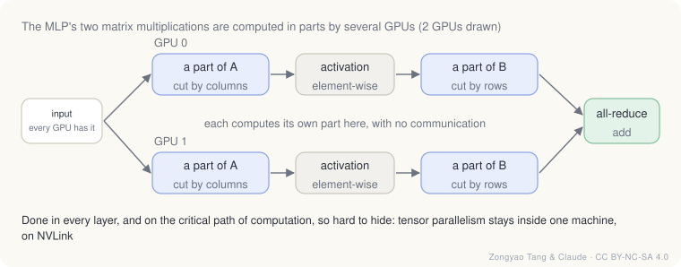
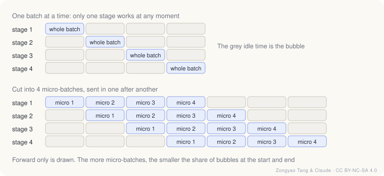
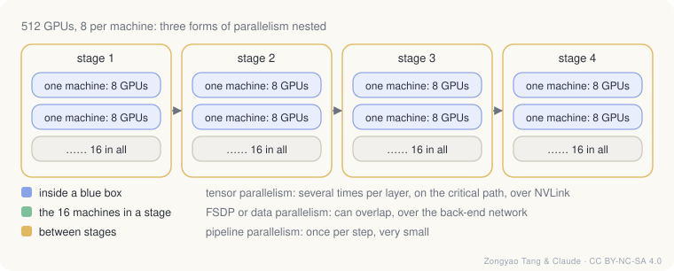

The thread: what FSDP divides is "storage", and each GPU still computes every layer in full. For a still larger model, "computation" has to be divided too → dividing within a layer is tensor parallelism → dividing by the order of the layers is pipeline parallelism → each of these has its own communication pattern, and they are combined in layers according to link bandwidth → finally, an example that applies the idea of "dividing" to sequence length. This unit keeps using the gap from 5.1: inside a machine is an order of magnitude wider than across machines.
Part 7 · Distributed training7.3 Model parallelism and TorchTitan
Translated by AI (Anthropic's Claude) from the Chinese edition. The Chinese original is the reference.
This unit answersLarger models, more GPUs: how are the forms of parallelism combined?
Follows 7.2: FSDP divides "storage"; this unit divides "computation" as well.
- Tensor parallelism: cut a matrix multiplication apart, and have several GPUs compute it together
- Pipeline parallelism: cut by layers, and fill the "bubbles" with micro-batches
- Forms of parallelism combined in layers by bandwidth
- Ring Attention: when a sequence is too long, cut it up and rotate it between GPUs
Explanation
1Tensor parallelism: cut a matrix multiplication apart, and have several GPUs compute it together
Megatron's way: the MLP's first matrix is cut by columns and the second by rows; each GPU computes its own part, and one all-reduce combines them at the end. Attention is cut by heads, following the same pattern.
What FSDP divides is storage: parameters are stored separately, but when a GPU computes a layer, it still has to get the layer's full parameters and compute the whole thing. What tensor parallelism divides is the computation itself: a layer's matrix multiplications are computed by several GPUs, each doing a part.
Take the MLP as an example. The MLP in a Transformer is two matrix multiplications: first widen the dimension 4 times (matrix A), apply the activation function, then narrow it back (matrix B). Megatron's way of cutting:
- Cut A by columns into N parts. Each GPU uses its own part and computes 1/N of the intermediate result (of the 4-times-wide vector in the middle, each GPU has one stretch). This step needs no communication: the input is the same, and each computes its own.
- The activation function is element-wise, so each GPU applies it to its own stretch, again with no communication.
- Cut B by rows into N parts. Each GPU multiplies its own stretch of the intermediate result by its own part of B, and gets "one part of the contribution to the final output".
- Only adding up the N GPUs' contributions gives the complete output. This step is one all-reduce.

A cut by columns, B by rows, communicating only for the final sum The cleverness of "cut by columns first, then by rows" is that no communication is needed between the two matrix multiplications, and the whole MLP communicates only once, at the end.
Attention likewise. The heads of multi-head attention are computed independently anyway, so the heads are shared out among the GPUs; the final output projection is cut by rows, followed by one more all-reduce.
So each Transformer layer's forward pass has two all-reduces (one for attention, one for the MLP), and the backward pass two more.
Why it can only stay inside a machine. Compare it with the communication of data parallelism and FSDP:
- Data parallelism: communicates once per step, carrying gradients, and can overlap the backward pass.
- Tensor parallelism: communicates several times per layer, carrying activations; and the next computation needs the result of this communication, so it has to wait for it to finish before carrying on. It is on the critical path of computation and hard to hide.
Communication this frequent and this hard to overlap is only worth it on the fastest links. 5.1 gave the figures: NVLink inside a machine is an order of magnitude wider than the network across machines. So the reach of tensor parallelism is usually the handful of GPUs inside one machine (say 8).
(TorchTitan mentions an "asynchronous tensor parallelism" that increases overlap by splitting communication and computation into smaller pieces, giving an improvement of a little over ten percent in its experiments. The idea is still the one from 0.1: find a way to fill the waiting with other work.)
An analogyLike several people copying out a book together: each copies different columns, and they are put together at the end.
So every layer has to communicate, and the communication is on the critical path of computation and hard to hide; tensor parallelism suits only the inside of one machine with very high bandwidth (NVLink).
Used later in Pipeline parallelism: cut by layers, and fill the "bubbles" with micro-batchesForms of parallelism combined in layers by bandwidthSourcesMegatron-LM paperMegatron paper: how tensor parallelism splits a layerTorchTitan paper, page 4, §2.1.3: tensor parallelismTorchTitan paper, page 6: asynchronous tensor parallelism- Cutting within a layer is one way. Another is more intuitive: cut by the order of the layers.
2Pipeline parallelism: cut by layers, and fill the "bubbles" with micro-batches
Put different layers of the model on different GPUs, and the data passes through stage by stage like a pipeline. With only one batch of data sent in, most GPUs are waiting; cut a batch into many micro-batches, and all the stages can work at once. The idle fraction is about (stages−1)/(micro-batches+stages−1).
Divide the model's layers into several stages, each on a group of GPUs. For example, 32 layers in 4 stages of 8 layers each. Data flows from stage 1 to stage 4 to finish the forward pass, then from stage 4 back to stage 1 to finish the backward pass.
Very little communication. Between stages, only the activations at the boundary (forward) and their gradients (backward) need to pass: the size is batch × sequence length × hidden dimension, independent of the number of model parameters, and they pass only once per step. Compared with tensor parallelism's several all-reduces per layer, this traffic is much smaller, and happens only between two adjacent stages. So it can go over cross-machine links.
The problem is bubbles. If only one batch is sent in at a time: while it is in stage 1, stages 2, 3 and 4 have nothing to do; when it reaches stage 2, stages 1, 3 and 4 have nothing to do… at any moment only one stage is working, and the 4 groups of GPUs are only a quarter utilised. These idle stretches are called bubbles.

An example with 4 stages: rows are stages, columns are time Fill them with micro-batches. Cut a batch into m small micro-batches and send them in one after another. When micro-batch 1 enters stage 2, micro-batch 2 enters stage 1, and so on. Once steady, every stage is processing some micro-batch, like a real pipeline.
But the beginning and the end cannot be avoided: at the very start, the later stages wait for the first micro-batch to flow through; at the end, the earlier stages wait for the backward pass of the last micro-batch to flow back. Work out the idle fraction:
bubble fraction = (p − 1) ÷ (m + p − 1), where p is the number of stages and m the number of micro-batches.
- 4 stages, 1 micro-batch: 3/4, the three-quarters idle above.
- 4 stages, 8 micro-batches: 3/11, about 27%.
- 4 stages, 32 micro-batches: 3/35, about 9%.
The more micro-batches, the smaller the bubbles. There are two costs: each micro-batch's activations have to be kept until its backward pass comes back before they can be freed, so the more micro-batches are "in flight" at once, the higher the memory use; and with micro-batches too small, each GPU is not kept busy (back to 0.2). The Megatron paper also proposes an interleaved schedule, in which each group of GPUs is responsible for several small non-adjacent stages, trading more communication for smaller bubbles.
Remember it alongside the earlier forms of parallelism:
- Data parallelism: divides the data. Communication is gradients, once per step.
- FSDP: divides storage. Communication is parameters and gradients, several times per layer, and can be prefetched.
- Tensor parallelism: divides the computation within a layer. Communication is activations, several times per layer, on the critical path.
- Pipeline parallelism: divides computation by layer. Communication is the activations at stage boundaries, small in volume, but there are bubbles.
An analogyLike three machines for washing, drying and folding clothes: wash one huge basket at a time and the other two sit idle; split it into many small baskets and all three machines can run together.
So the more micro-batches, the smaller the bubbles; a pipeline passes only activations between adjacent stages, with little traffic, suiting the space between machines.
Builds on Tensor parallelism: cut a matrix multiplication apart, and have several GPUs compute it togetherFive ideas come back in every layerUsed later in Forms of parallelism combined in layers by bandwidthSourcesAccelerate chapter 11: multi-machine trainingMegatron paper: pipeline parallelism and bubblesTorchTitan paper, page 5, §2.1.4: pipeline parallelism- Each of the four forms of parallelism has strengths and weaknesses. When large models are really trained, they are stacked on top of each other. How they are stacked follows one principle.
3Forms of parallelism combined in layers by bandwidth
Tensor parallelism communicates most often and stays inside a machine; pipeline parallelism communicates little and can cross machines; data parallelism and FSDP go in the outermost layer; when sequences are especially long, context parallelism is added. TorchTitan combines these dimensions with a multi-dimensional device grid (DeviceMesh).
The principle: the more frequent and the harder to overlap a form of parallelism's communication, the faster the link it goes on.
Sort the four forms of parallelism by how "demanding" their communication is, and match them with the links of 5.1 and 5.3:
Form of parallelism Communication Where it goes Tensor parallelism Several times per layer, on the critical path Inside one machine, over NVLink FSDP / data parallelism Per layer or per step, can overlap Across machines, the back-end network Pipeline parallelism Once per step, very small Across machines, and can reach further A concrete example. 512 GPUs, 8 per machine:
- The 8 GPUs inside each machine do tensor parallelism, together acting as "one big GPU".
- The 64 machines are divided into 4 stages for pipeline parallelism, 16 machines per stage.
- The 16 machines within each stage do FSDP or data parallelism among themselves.

The example from the text, drawn as a picture So each GPU belongs to three "groups" at once: the tensor-parallel group of its machine, the data-parallel group of its stage, and one stage of the pipeline. Total GPUs = 8 × 16 × 4.
DeviceMesh is this written as code. PyTorch describes all the GPUs with a multi-dimensional grid: each dimension corresponds to one form of parallelism, and the example above is a 4 × 16 × 8 grid. The group of GPUs taken along one dimension is the set that communicates with each other for that form of parallelism; each dimension has its own process group (that is, the communicator of 6.2). One of TorchTitan's contributions is to build every form of parallelism on this same grid and on "distributed tensors", so that they can be stacked freely, without writing separate code for each combination.
What this means for troubleshooting. One job has several communicators at once, each taking different links, with different communication patterns:
- The tensor-parallel dimension is slow: check inside the machine, the state of NVLink (5.1).
- The data-parallel or FSDP dimension is slow: check the cross-machine network (5.2, 5.3, 6.3).
- And "which GPU belongs to which group" depends on the mapping from process number to physical location. If the mapping is wrong, for example the 8 GPUs of a tensor-parallel group are split across two machines, the most frequent communication lands on the slowest link, performance is off by an order of magnitude, and the program reports no error at all.
So the scheduling of part 8 (which machines a job's GPUs are placed on, and how process numbers are assigned) is connected to this: a parallel scheme assumes a physical layout, and scheduling has to deliver it.
An analogyLike a company's organisation: the people who need to talk most often sit in the same office, departments hand work over by procedure, and branch offices exchange only monthly reports.
So when choosing a combination of parallelism, first look at how often each form communicates and at each link's bandwidth: the most frequent communication goes on the fastest links.
Builds on Tensor parallelism: cut a matrix multiplication apart, and have several GPUs compute it togetherPipeline parallelism: cut by layers, and fill the "bubbles" with micro-batchesFSDP's rhythm: assemble a layer in full only when it is used, let it go as soon as it has been usedNVLink plus NVSwitch: a private line between every pair of GPUsThe Clos topology: many small switches built into a network that never narrows between any two pointsUsed later in A distributed training job is a set of Pods that know each otherWhere the GPUs go: line up NUMA within a node, consider network topology between nodesSourcesTorchTitan paper, page 2: DeviceMesh and DTensorTorchTitan paper, page 10, §3.3.3: combining 3D parallelismMegatron paper, figure 2: combining tensor and pipeline parallelism- So far what was cut was parameters and layers. When the sequence itself is so long that one GPU cannot hold its activations, it can also be cut along the direction of the sequence.
4Ring Attention: when a sequence is too long, cut it up and rotate it between GPUs
Each GPU holds one segment of Q; the segments of K and V pass round a ring between the GPUs. Each time a GPU receives a segment of K and V, it accumulates attention once using online softmax, and at the same time passes the segment on to the next GPU.
The problem. When sequence length reaches hundreds of thousands or even millions of tokens, one layer's activations may not fit in one GPU's memory even with a batch of 1. Data parallelism does not help (it divides the batch), and tensor and pipeline parallelism divide the model, so they do not help either.
How to cut. Cut the sequence into N segments, each GPU responsible for one. Operations other than attention (the MLP, normalisation) work position by position, so each GPU processes its own segment, independently of the others. The only difficulty is attention: the Q of each position has to interact with the K and V of every position, and the other positions are on other GPUs.
Passing round the ring. Each GPU keeps the Q of its own segment where it is. K and V pass round the ring between GPUs:
- Round 0: each GPU computes part of the attention from its own Q and its own K and V; at the same time it sends its own K and V to the next GPU.
- Round 1: each GPU receives the K and V from the GPU before it, computes another part from its own Q and them, and adds it to the result; at the same time it passes this K and V on to the next GPU.
- After N−1 such rounds, every GPU's Q has seen all of K and V.
Why it can be "computed part by part". The softmax in attention needs normalisation over a whole row, so in principle all of K has to be seen before it can be computed. But 4.4 explained online softmax: as long as "the maximum so far" and "the sum of exponentials so far" are kept up to date, K and V can be read in block by block, correcting as you go, and the final result is exactly the same as computing it all at once.
So context parallelism and Flash Attention are the same algorithm:
- Flash Attention: the "blocks" of K and V are read one by one from GPU memory into fast on-chip storage.
- Ring Attention: the "blocks" of K and V arrive segment by segment from other GPUs.
Both exist so that the full N×N attention matrix never appears anywhere. This is "move data close and use it many times" from 0.1 at two different scales: once inside the chip, once between GPUs.
Communication and computation can overlap. In each round, "computing with the K and V in hand" and "passing them to the next GPU while receiving from the one before" happen at the same time. As long as one round's computation takes no less time than one round's transfer, communication is hidden.
In combination, context parallelism usually sits one layer outside tensor parallelism: it communicates less than tensor parallelism, but more often than data parallelism.
An analogyLike a reading group: each person holds a different chapter, everyone passes them round in turn, and after one round each person has seen the whole book.
So context length can scale linearly with the number of GPUs; it is really just the "blocks + online softmax" of 4.4, with the "blocks" replaced by different GPUs.
Builds on Online softmax: correct without seeing the whole rowRing all-reduce: however many GPUs there are, each GPU's traffic barely changesSourcesLecture 13 notebookTorchTitan paper, page 10: context parallelism combined with 3D parallelism
Putting it together
Tensor parallelism divides a layer's matrix multiplications among several GPUs; every layer communicates, so it can only stay inside a machine. Pipeline parallelism puts different layers on different GPUs and passes only activations; it suits crossing machines, at the price of "bubbles". Real large-model training combines them in layers by bandwidth: the most frequent communication goes on the fastest links. Context parallelism applies the same idea to sequence length.
Test yourself
Without looking back at the explanation, say it in your own words.
- How does tensor parallelism divide a layer's computation among several GPUs? Why does it suit only the inside of one machine?
- What are the "bubbles" of pipeline parallelism? How do micro-batches make them smaller?
- When several forms of parallelism are combined, which layer of links should each go on? On what basis?
- What problem does context parallelism (Ring Attention) solve? How is it related to Flash Attention?